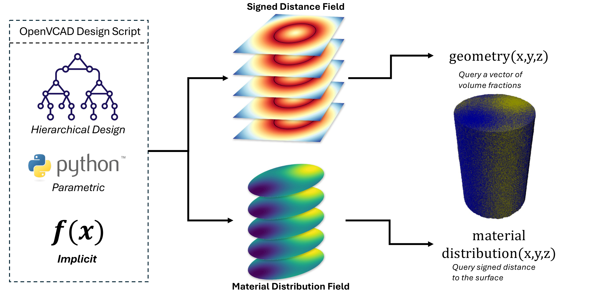
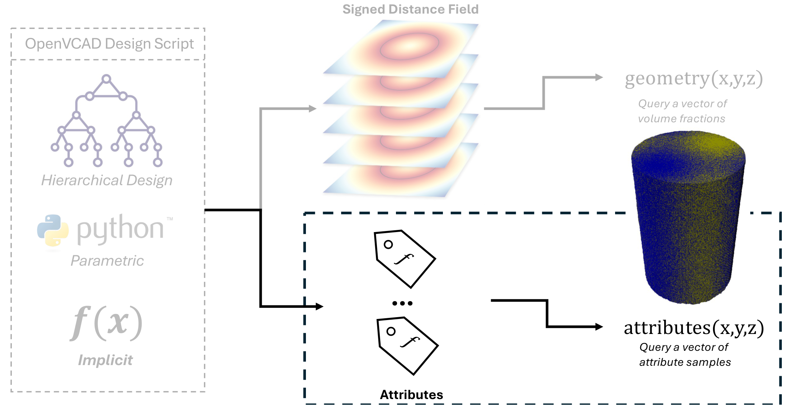
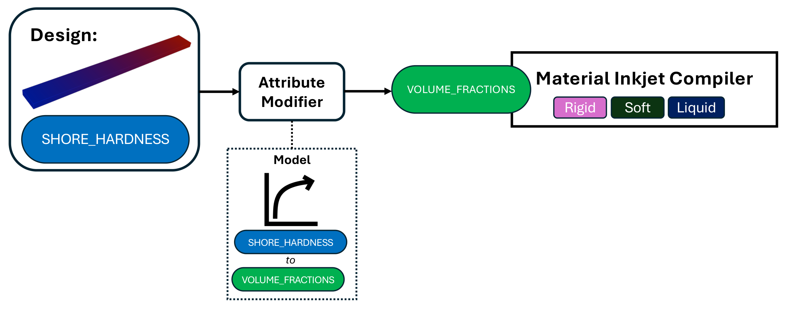
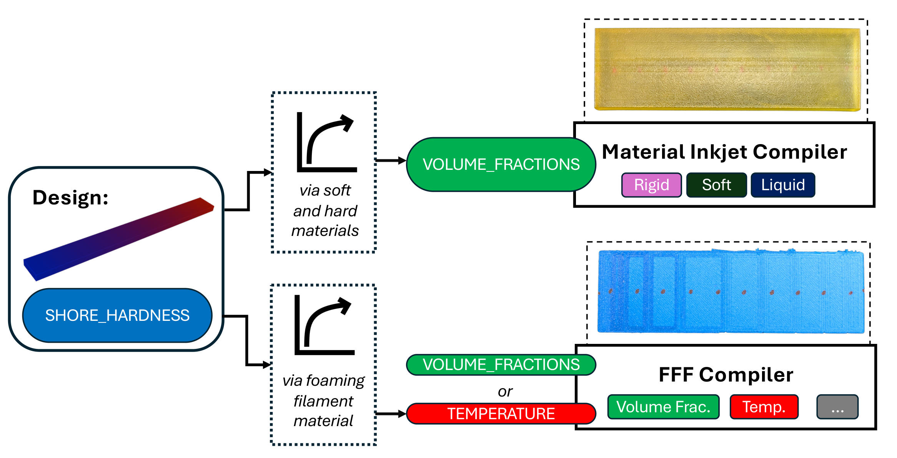

Theory and Motivation#
This guide explains why OpenVCAD uses attribute modeling and how that changes the way you think about programmable manufacturing. It is the conceptual companion to the Getting Started with OpenVCAD guide, which focuses on writing and running pyvcad code.
OpenVCAD is built for designs where geometry and local properties both matter. A useful model might need a smooth stiffness gradient, a color field, a porosity field, a local temperature target, or a multi-material recipe that changes throughout the part. The central idea is simple: instead of modeling only the outside surface of an object, OpenVCAD lets you describe fields through the volume of the object.
Why OpenVCAD Exists#
Advanced additive manufacturing can vary much more than shape. Multi-material inkjet systems can mix materials inside a part. Filament systems can vary process settings such as temperature, flow rate, or infill density. Emerging workflows can tune color, porosity, modulus, toughness, density, swelling behavior, or other application-specific properties at different positions in the same object.
That power is hard to use with conventional CAD. Tools such as SolidWorks and Fusion 360 are excellent at modeling surfaces and assemblies, but their core representation is boundary-focused: the model tells you where the exterior faces are. That matches a long history of single-material subtractive machining, injection molding, and surface-based exchange formats. It does not naturally answer questions like:
what is the local modulus 2 mm below this surface?
how does this Shore hardness target map to printer materials?
which process settings should be used in the middle of this beam?
how can one design be compiled for two different manufacturing systems?
Without a reusable framework, designers often solve those questions with one-off scripts. The script might bake in a specific printer, a specific material pair, a specific calibration curve, and a specific part. That can work once, but it is difficult to inspect, maintain, share, or retarget.
OpenVCAD’s goal is to make those workflows systematic. A designer should be able to encode design intent once, then reuse the same model across rendering, printing, and simulation workflows.
From B-rep to Implicit Geometry#
OpenVCAD starts from an implicit modeling view of geometry. Instead of storing only boundary faces, an implicit model answers a query at any point in space:
geometry(x, y, z) -> signed distance
The returned value is a signed distance field (SDF):
positive values are outside the object
zero is the surface
negative values are inside the object
This representation is powerful for procedural and parametric design. Boolean operations, repeated structures, transformations, shells, offsets, lattices, and smoothly varying geometric features can be expressed as functions rather than as hand-edited surface patches.
Tools such as nTopology have shown why implicit modeling is useful for geometry-heavy design. It is a strong fit for complex forms, simulation-driven shapes, and functionally graded geometry. The key limitation is that geometry is still only half of a heterogeneous manufactured object.
The Missing Half: Heterogeneous Modeling#
Implicit geometry tells you where the object is. Heterogeneous modeling also needs to tell you what the object is locally.
In earlier OpenVCAD workflows, this second field was usually a material distribution. A design carried a geometry field plus a volume-fraction field:
Earlier direct material-distribution representation

That representation is useful, but it is too narrow as the main abstraction. Volume fractions are one possible output of a heterogeneous design, not the only meaningful thing a designer might want to model.
For example, a material-jetting workflow might need VOLUME_FRACTIONS, but a filament workflow might need TEMPERATURE, FLOW_RATE, or INFILL_DENSITY. A simulation workflow might need MODULUS, POISSONS_RATIO, or DENSITY. A renderer might care about COLOR_RGBA. A user might prefer to design in terms of SHORE_HARDNESS because that is the property they measured or specified.
If volume fractions are treated as the material itself, every higher-level property has to be manually translated into that form up front. That makes the design less portable and hides the intent behind machine-specific details.
OpenVCAD Attribute Modeling#
Attribute modeling generalizes the material-distribution idea. An OpenVCAD object is a composition of:
an implicit geometric form, represented by an SDF
a collection of implicit attribute fields attached to that geometry
The geometry still answers where the object is. The attributes answer named questions about the object at the same point:
Attribute-modeling representation

Attributes can represent visual properties, physical properties, material recipes, process parameters, or intermediate design intent. Common examples include:
Attribute intent |
Example OpenVCAD names |
|---|---|
Visual fields |
|
Physical fields |
|
Process fields |
|
Material fields |
|
This shift is the core modeling move in OpenVCAD 3.x: volume fractions are no longer the special representation of material behavior. They are one attribute among many. That means a design can carry the field that best expresses the designer’s intent, then derive lower-level fields only when a downstream workflow requires them.
Design by Intent#
Design by intent means modeling the property you care about, not the machine setting you happen to need today.
For example, if a beam should transition from soft to stiff, the user can model a SHORE_HARDNESS or MODULUS field. A calibrated model can later translate that field into inkjet material fractions, filament temperatures, flow-rate compensation, or simulation properties.
Computing compiler-facing attributes from design intent

In OpenVCAD, this translation is handled by attribute conversion tools. At the direct level, pv.AttributeModifier wraps a design and computes new attributes from existing ones. At the workflow level, pyvcad_attribute_resolver can select registered conversion paths and add the needed modifiers automatically. The Attribute Modifier and Resolver Guide covers that workflow in detail.
The same intent field can also be retargeted to different manufacturing backends:
Cross-compilation from one intent field

This is why OpenVCAD treats compilers as downstream consumers of a single design tree. The same pyvcad model can be previewed in the renderer, compiled into material-jetting slices, exported to a slicer project, or sampled into simulation-ready data. Each backend consumes the attributes it understands.
What This Means for Modeling#
For everyday pyvcad modeling, the practical rule is:
build the geometry as an implicit node tree
attach the attributes that express your design intent
preview the result in the renderer
use compilers or resolvers only when you need a concrete output
The Getting Started with OpenVCAD guide turns this mental model into code. It starts with geometry, then introduces scalar attributes, colors, volume fractions, attribute priority, coordinate spaces, and multi-attribute designs.